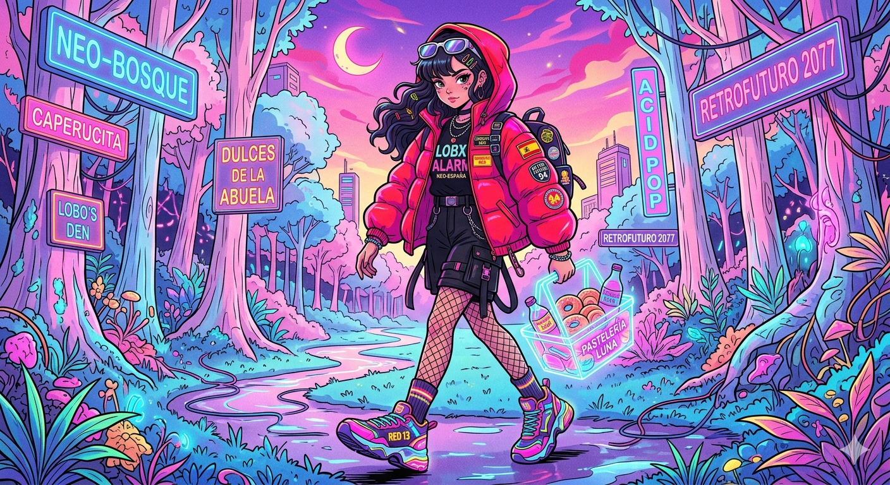
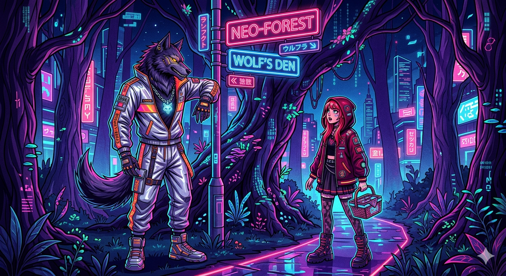
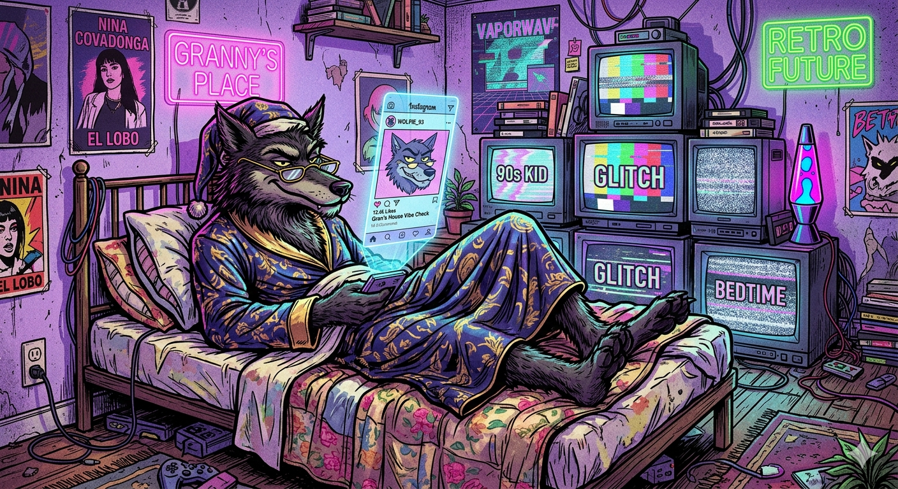
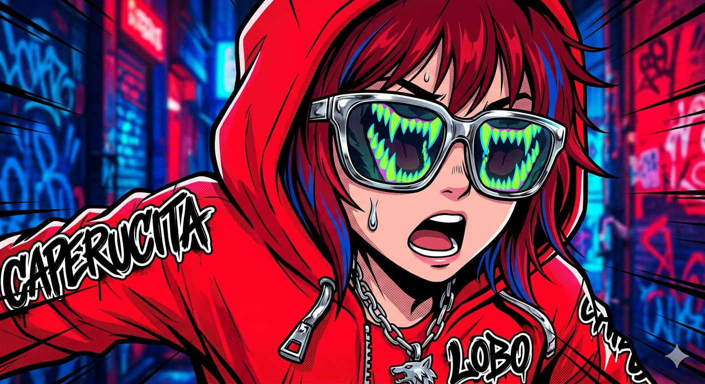
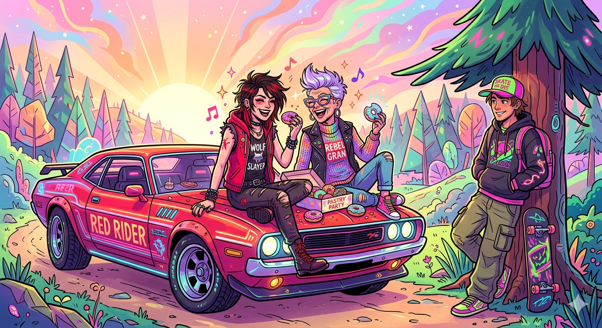

Había una vez una dulce niña que vivía en un pequeño pueblo cerca de un bosque frondoso. Todos la llamaban Caperucita Roja porque siempre llevaba una llamativa capa con capucha de ese color, un regalo de su querida abuela.

Una mañana soleada, su madre la llamó a la cocina. Había horneado pasteles frescos y la abuela, que vivía al otro lado del bosque, se encontraba enferma y débil.
Antes de que la niña partiera, su madre le dio un aviso muy importante que marcaría su destino. Las reglas eran claras:
Caperucita asintió con entusiasmo, metió los pasteles en su cesta y se despidió, prometiendo cumplir cada una de las órdenes de su madre.
El bosque era un lugar lleno de vida, pero también de sombras. A mitad de su trayecto, detrás de un enorme roble ancestral, apareció una figura imponente: el Lobo Feroz.

El lobo, con modales refinados y una voz engañosamente amable, la saludó con cortesía. Caperucita, olvidando por completo la advertencia de su madre, se detuvo a responderle.
El lobo le propuso un juego inocente para ver quién llegaba antes a la casa de la abuela. Le sugirió dos rutas distintas:
El lobo corrió con todas sus fuerzas por el camino corto. Al llegar a la cabaña de la anciana, fingió la voz de la niña, entró sin permiso y, de un solo bocado, se tragó a la abuela. Rápidamente, ideó un plan para atrapar también a Caperucita.
El animal se puso la camisa de dormir de la abuela, se colocó su gorro de encaje, se echó un poco de su perfume de lavanda y se metió en la cama, corriendo las cortinas para ocultar su verdadero aspecto en la penumbra.

Cuando Caperucita Roja llegó a la casa, encontró la puerta entornada. Al acercarse a la cama, sintió un extraño escalofrío. La figura que yacía allí no se parecía del todo a su abuela.
Fue en ese tenso momento cuando se produjo la conversación más famosa de la historia:
—¡Oh, abuelita, qué orejas tan grandes tienes!
— Diálogo entre Caperucita y el Lobo
—Son para oírte mejor, querida.
—¡Abuelita, qué ojos tan grandes tienes!
—Son para verte mejor, mi niña.
—¡Abuelita, qué manos tan grandes tienes!
—Son para abrazarte mejor.
—¡Abuelita, qué dientes tan grandes y afilados tienes!
—¡Son para comerte mejor!

El lobo saltó de la cama con una agilidad feroz y se tragó a la pobre Caperucita Roja en un instante. Con la barriga completamente llena, el lobo se quedó profundamente dormido, roncando ruidosamente.
Un valiente cazador que pasaba cerca de la cabaña escuchó los extraños y potentes ronquidos. Al entrar y ver al lobo con la enorme barriga hinchada, comprendió la situación de inmediato. Con cuidado y usando sus herramientas, abrió el estómago del lobo dormido.
Para su sorpresa y alivio, tanto Caperucita Roja como su abuela salieron sanas y salvas, aunque muy asustadas. Llenaron la barriga del lobo con piedras pesadas, de modo que cuando este despertó e intentó huir, cayó desplomado debido al peso.
A partir de ese día, Caperucita Roja guardó una máxima en su corazón:
"Nunca debemos confiar en las apariencias ni desobedecer los consejos de quienes nos quieren proteger."
